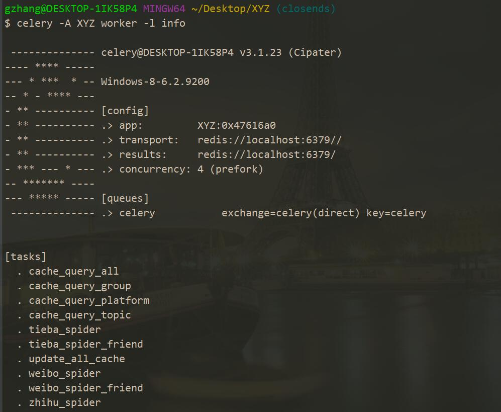
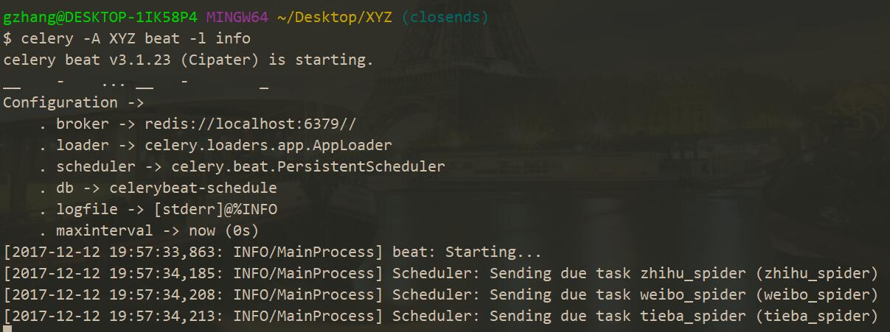

一、简介
Celery 是 Python 开发的分布式队列处理器，可以异步、分布式地处理任务，也可以执行定时任务。我们可能在 Django 中执行一些比较耗时的任务，如发邮件，我们总不能等待邮件发送完毕了再响应页面吧，同时有一些任务是需要在后台执行的，如爬虫和服务器缓存更新，这时候 Celery 就是一个不错的选择。
二、配置
在使用 Celery 的时候我们还需要选择一个中间件，用来保存队列记录、执行记录，作为对 Celery 执行过程的数据支持，可以选择 Django 本身、mongodb 等，这里我们使用的是 Redis。
Redis 安装
首先在这里下载编译好的 Windows 环境下的 Redis ，然后安装并配置环境变量。
启动 Redis 服务器，在终端输入以下命令：1
redis-server
Python 库安装
在 python 环境下安装 celery、redis，命令如下：1
2pip install celery
pip install redis
以上命令会自动安装相关的依赖包，我用的 celery 版本是 3.1.23，在 python34 和 python35 下运行良好。
Django 配置
在 settings.py 所在目录下新建 celery.py 文件，代码如下：1
2
3
4
5
6
7
8
9
10
11
12
13
14
15
16
17
18
19from __future__ import absolute_import, unicode_literals # 必须在最上面
import os
from celery import Celery
from django.conf import settings
# 配置环境变量
project_name = os.path.split(os.path.abspath('.'))[-1]
project_settings = '%s.settings' % project_name
os.environ.setdefault('DJANGO_SETTINGS_MODULE', project_settings)
# 实例化 Celery
app = Celery(project_name)
# 使用 Django 的 settings 文件配置 Celery
app.config_from_object('django.conf:settings')
# Celery 加载所有注册的应用
app.autodiscover_tasks(lambda: settings.INSTALLED_APPS)
为了让项目能够加载这个文件，我们还需要在该目录下的 __init__.py 文件中添加如下代码：1
2from __future__ import absolute_import, unicode_literals
from .celery import app as celery_app #引入celery实例对象
最后在 settings.py 文件中配置 Celery，代码如下：1
2
3
4
5
6
7
8
9
10
11
12
13# Celery 中间件 redis://redis 服务所在的 ip 地址:端口/数据库号
BROKER_URL = 'redis://localhost:6379'
# Celery 结果返回，可用于跟踪结果
CELERY_RESULT_BACKEND = 'redis://localhost:6379'
# Celery 内容等消息的格式设置
CELERY_ACCEPT_CONTENT = ['application/json']
CELERY_TASK_SERIALIZER = 'json'
CELERY_RESULT_SERIALIZER = 'json'
# Celery 时区设置，与 settings.py 文件的时区设置保持一致
CELERY_TIMEZONE = 'Asia/Shanghai'
三、使用
耗时任务
在 Django 项目 app 下 models.py 文件所在目录下建立 tasks.py 文件，你可以将所有需要异步执行、后台执行的代码放在这里。这里摘取我 Django 项目中部分代码片段：1
2
3
4
5from celery.task import task
def weibo_spider_friend(username, friend):
# some spider operations
函数名上面是 celery 的装饰器 task，name参数是任务的名字，当然还有其他方法，请自行查阅。需要注意的是，这个函数的参数必须是可 JSON 序列化的数据，这是因为之前我们在 settings.py 文件中指定了消息内容的类型。
然后我们在 views.py 或者 views 文件夹下的视图函数中调用准备好的函数，代码如下：
1 | from ..tasks import weibo_spider_friend |
当我们调用这个视图函数的时候就会执行这个任务，在此之前，还有最后一个操作，在确保 Redis 已经启动并且可用的前提下，打开终端输入以下命令：1
celery -A django_project_name worker -l info
注意是在项目根目录下输入这条指令。运行效果如下，其中 tasks 下是我项目的所有任务集：

定时任务
同样，和前面一样我们需要在 tasks.py 下准备好需要定时执行的函数：1
2
3
4
5
6from celery.task import periodic_task
from celery.schedules import crontab
def weibo_spider():
# some code
异步任务装饰器参数，name 是任务名字，run_every 定义任务执行时间间隔，具体用法请参考 这篇博客。
分别在两个终端窗口执行以下命令：1
2celery -A django_project_name worker -l info
celery -A django_project_name beat -l info
第二条命令的执行效果如下，下面发出的三条命令是我项目中三个定时任务：
四、Supervisor && Celery
详细请参考 这篇博客，这是 Linux 下的使用姿势，Windows 下我实在不知呀，感受到了 Windows 对于程序员深深的恶意，正在弃坑中。